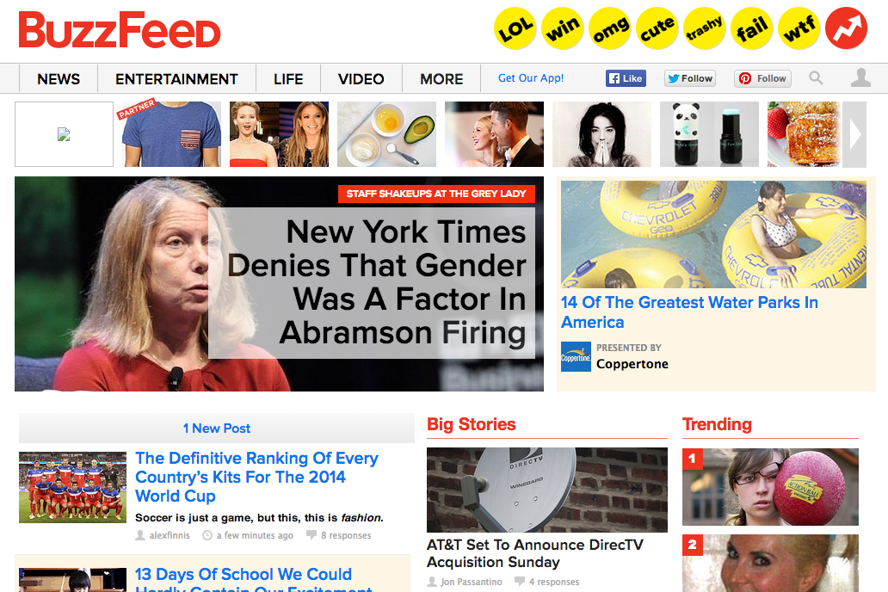
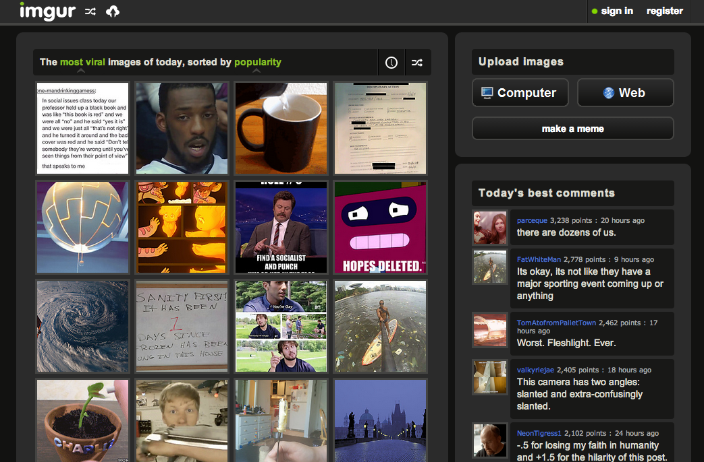
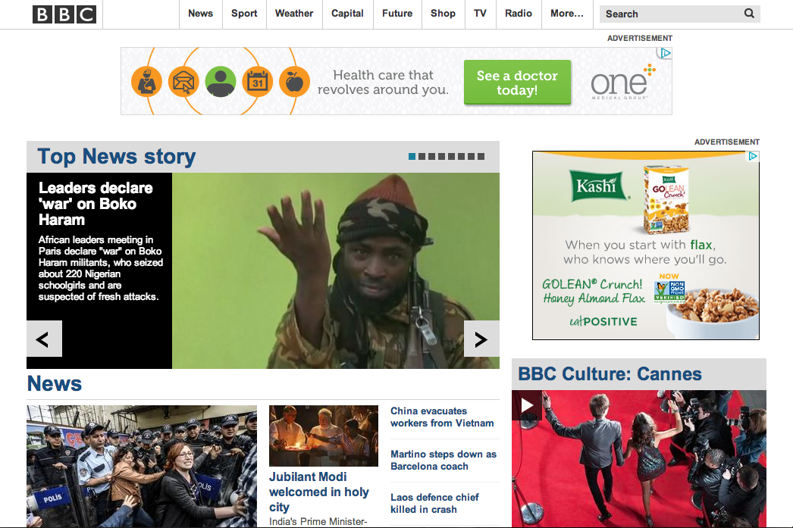

Patrick's Technical Blog
~ A Few of My Favorite Websites ~
BUZZFEED.COM

I'm initially drawn to the buzzfeed exlusive articles typically the first item listed on their homepage. But stepping back a little, I am then drawn to a section referred to as "Big Stories." Generally speaking, the website is a bit Cluttered but its also very simple, plain and fluid. But as you navigate through the website its very robust as well.
Its a trending news website which pushes some content that is sponorsed by the website or 3rd parties advertisers. But its ultimately a really great source of information of events taking place around the world. You'll notice that if you go to a primary news outlet they may not talk about important world news. But buzzfeed has articles and information about hot topics or "buzz" topics, if you will. Sometimes the content is silly or funny but generally they have very relevant, serious and applicable content.
Its very easy to find articles or information that I find relevant because of how they oraganize sections of their website. For example, Big Stories tend to include really important news from US/world politics to a new tech annoucement. This site is very fluid and easy to navigate. The only downside is that sometimes there is too much information and available articles.
When I've visited the buzzfeed website for a longer period of time, I feel like I've been overloaded with information but sometimes that's exactly what I'm looking for.
IMGUR.COM

Imgur....oh sweet, yet horrible wait of my time, Imgur. I love AND hate this website. For those of you who haven't heard of this website, its a user image trending site that's content is specifically dictated by users' "upvotes" or the dreaded "downvotes." Its a very simply website with a black background and the most trending images right at the home page. There is nothing particularly elegant or great about its presentation that stands out when you get the homepage The exception to this is when a particular image catches your eye and that's how it all begins. This is the beauty (and problem) with the website is that once you begin to navigate through the content, it sucks you in. It becomes impossible to pull yourself away for some reason I cannot explain. Its like a car accident, sometimes you just can't look away.
So the real problem with this website is that you can waste hours, let me say that again - HOURS! - looking through various user submitted images. What's worse, is that this can happen at anytime: at work, a wedding, while babysitting, you name it! Though the content is mostly images, you'll now see gifs, videos, memes, etc. So this only adds the never ending interest and fascination of the viewer.
However, if you are bored, looking for a good life or just something interesting to look at/through, this is your solution everytime. You, your family, a group of friends, whomever, can all enjoy this for a very long time. But keep in mind, its similar to bing watching a tv serious on netflix -- your eyes become glazed over and you feel so guilty after doing so. So, to say the least, you've been WARNED. ENJOY!
BBC.COM

The BBC website is a particular favorite of mine. Though there is some abvious bias in the content and articles found on the website, it is a very elegantly, well layed out website. The first thing you notice when you get to the homepage is that there is a lot of content with links to a variety of articles on a variety of topics. But as you settle in and take it all in, you'll notice that the content is very well organized and some of the top articles are right at the top and scrolling so you can get a quick taste of important events from around the world. This is also something that I think is great about the website, they report on news from all parts of the globe not just Great Britian which is where they're headquartered. This is where one should go if you want to read the lastest on all the revolutions taking place in Ukraine, Egypt, Venezuela, and others.
Generally speaking, this sites content is typically serious and to the point. However, they do have fluff articles sprinkled throughout the website which might report on star soccer players personal life drama or the royal baby's first steps. But it never gets to silly and doesn't typically focus on such things. But, if that's what you're looking for they have it setup in such a way so its easy to navigate to different sections of the website by topic, genre, etc. For me, by the time I've finished reading a number of articles that are important to me, I feel informed.
Something fun to do: Check out BBC and look for something that you might consider to be important world news. Then look for (if you can find it as it may not even be there) and read a similar article on CNN and see how the information in the articles compare. I bet you a dollar that BBC is either the only site that has that article or it has the most and most accurate information. Shame on you CNN. SHAME!